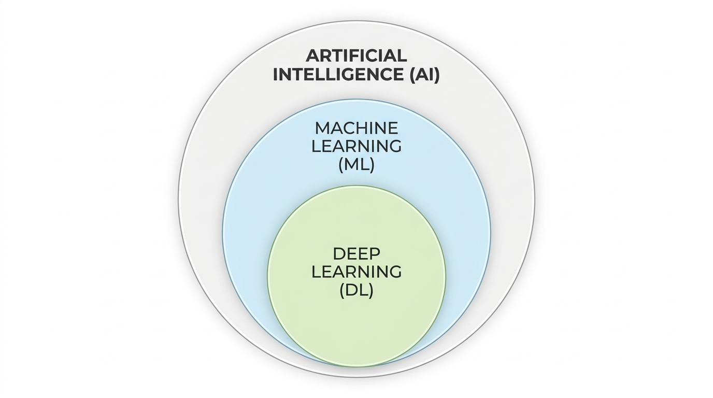
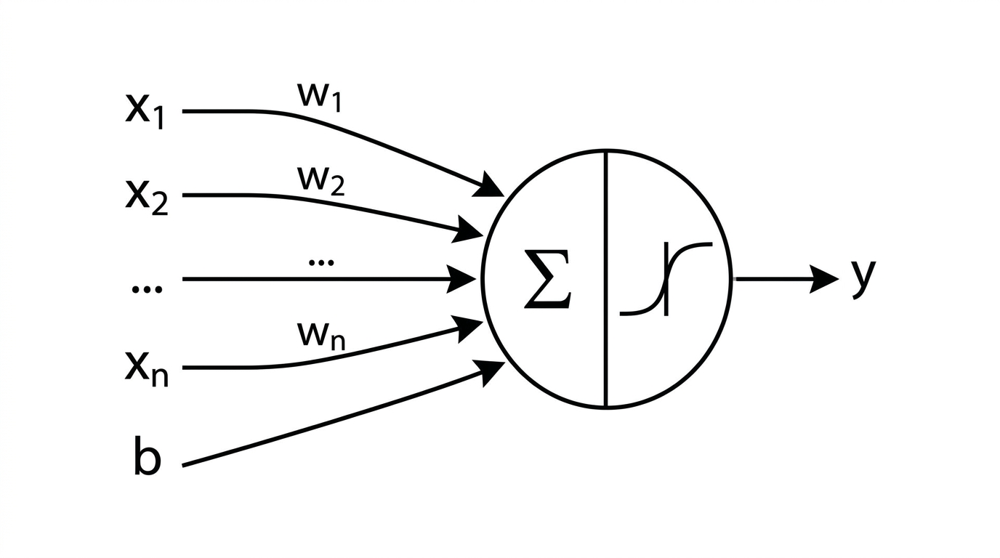
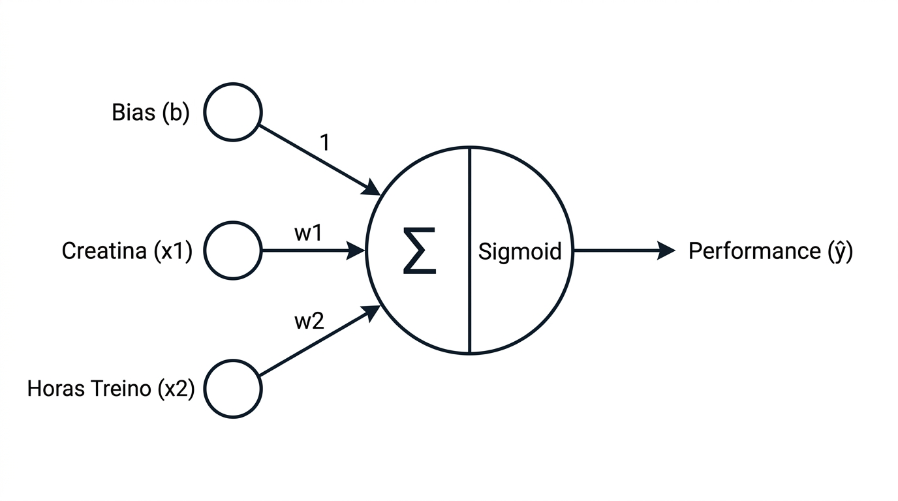
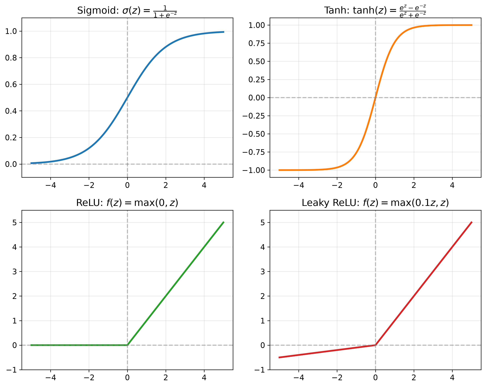
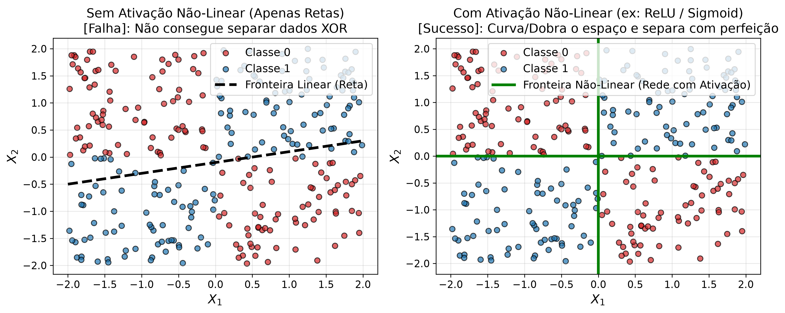
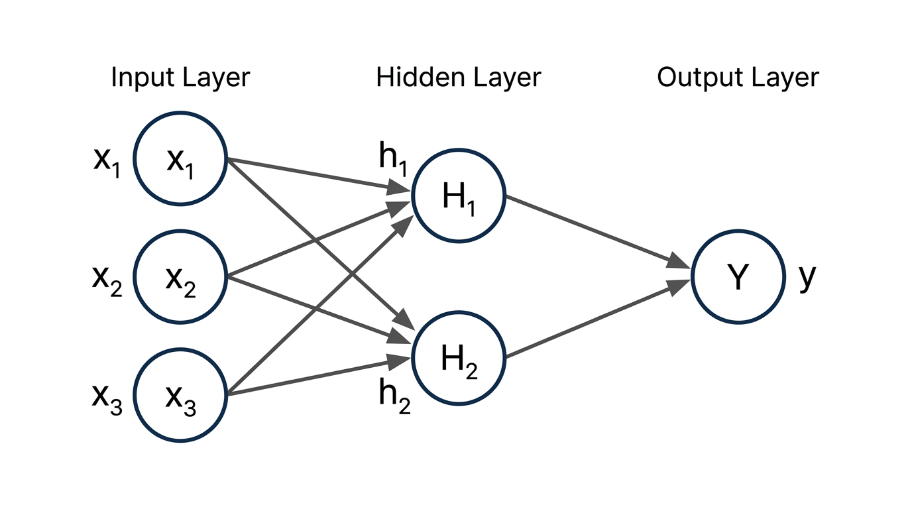

Fundamentos de Deep Learning & Neurônio Artificial
Aula 01: O Perceptron, Ativações e o Caso da Creatina
2026-07-27
Introdução ao Deep Learning

O Perceptron Clássico (Genérico)

O Neurônio Artificial (Aplicado)

A Matemática da Decisão
\[z = w_1 x_1 + w_2 x_2 + b\]
A Função de Ativação Sigmoid
\[\hat{y} = \sigma(z) = \frac{1}{1 + e^{-z}}\]
Por que precisamos de Ativações?
\[y = W_2 (W_1 x + b_1) + b_2 = (W_2 W_1) x + (W_2 b_1 + b_2) = W_{eq} x + b_{eq}\]
Visão Geral das Funções de Ativação

A Função ReLU (Rectified Linear Unit)
\[f(z) = \max(0, z)\]
\[f'(z) = \begin{cases} 0 & \text{se } z < 0 \\ 1 & \text{se } z > 0 \end{cases}\]
Vantagens da Função ReLU
- Simplicidade Computacional
- Gradiente Constante (Combate ao Vanishing Gradient)
- Esparsidade de Representação
A Variante Leaky ReLU
\[f(z) = \max(\alpha z, z) \quad (\text{onde } \alpha = 0.1)\]
O Desafio dos Problemas Não-Lineares
Problemas Lineares
- Dados separáveis por uma única reta ou plano.
Problemas Não-Lineares (XOR)
- Classes cruzadas em quadrantes. Nenhuma reta consegue separar sem erros.
Demonstração Gráfica: Curvando o Espaço

Indo Além: Redes Multicamadas (MLP)

Matemática da MLP: Camada Oculta
\[h_1 = \sigma(w_{11} x_1 + w_{21} x_2 + w_{31} x_3 + b_{h1})\]
\[h_2 = \sigma(w_{12} x_1 + w_{22} x_2 + w_{32} x_3 + b_{h2})\]
Matemática da MLP: Camada de Saída
\[\hat{y} = \sigma(v_1 h_1 + v_2 h_2 + b_o)\]
Transição para o PyTorch
1. Tensores
- Arrays multidimensionais em GPU.
2. Autograd
- Diferenciação automática de gradientes.
3. Otimizadores
- Ajuste automático dos pesos (SGD, Adam).
Próximo Passo: Abrir o Jupyter Notebook aula_01_introducao_deep_learning.ipynb!